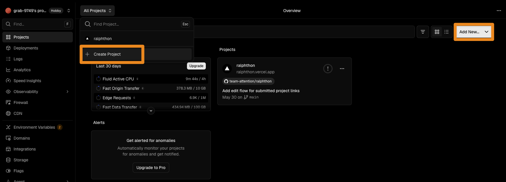
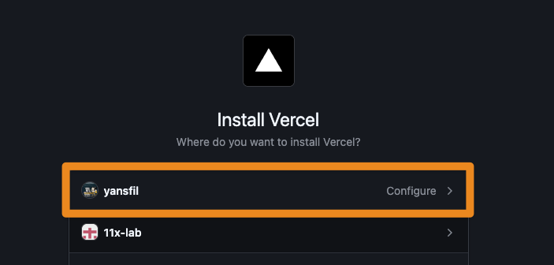
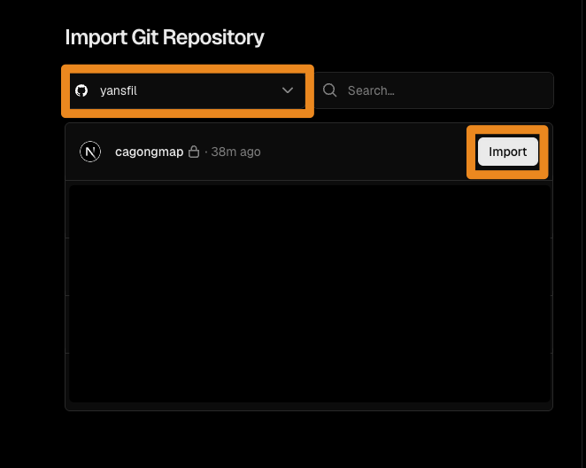
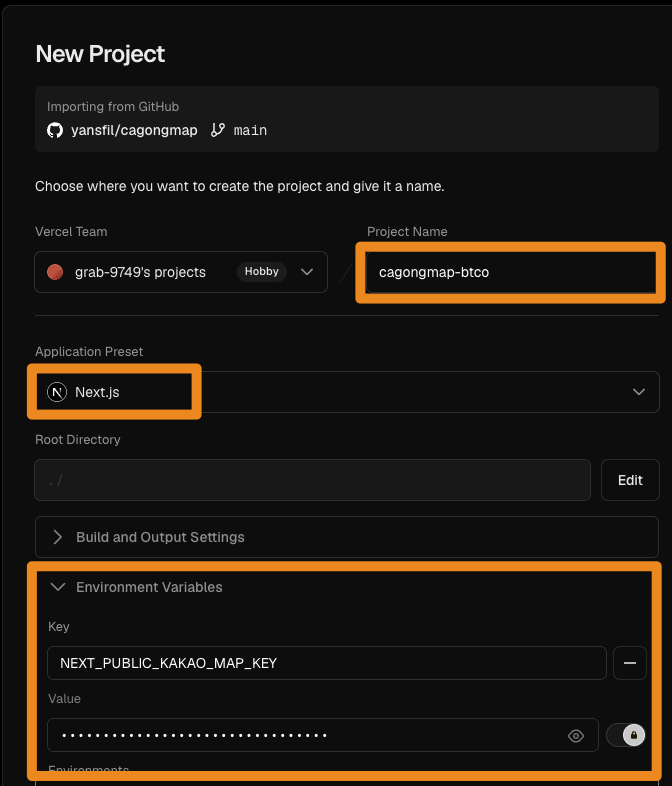
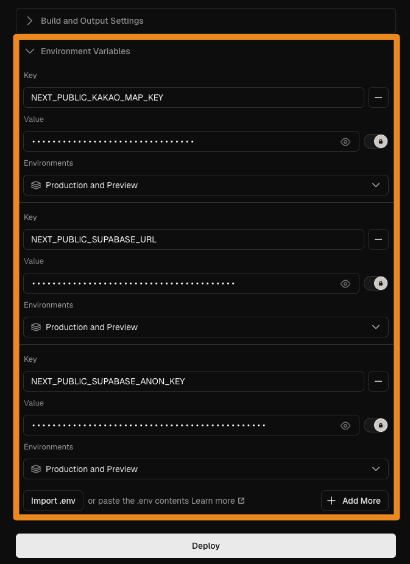
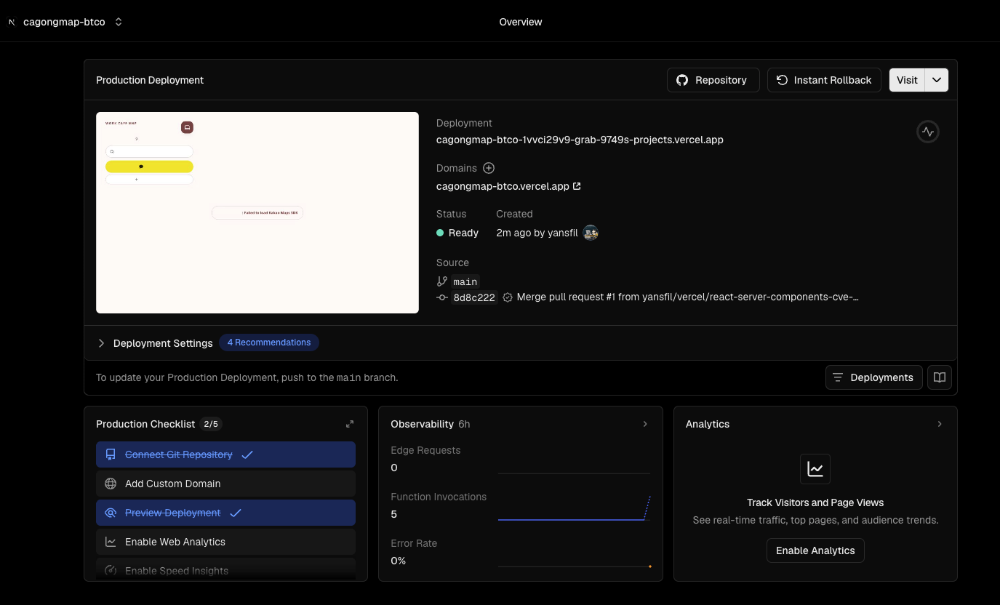
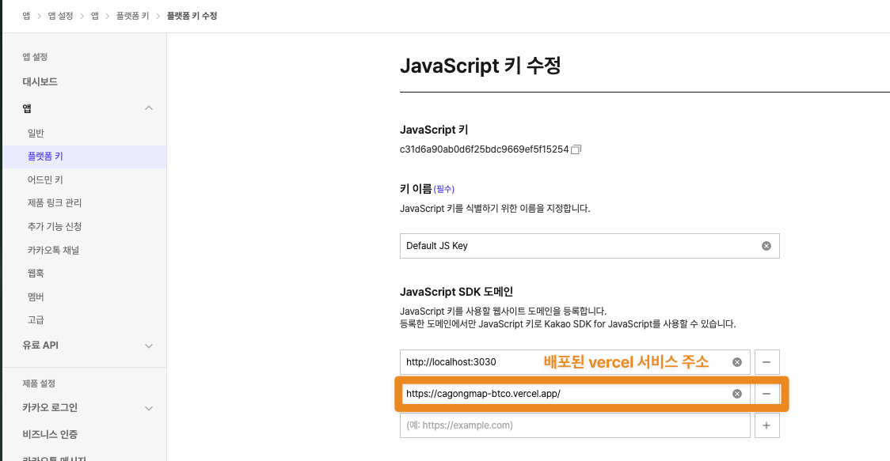
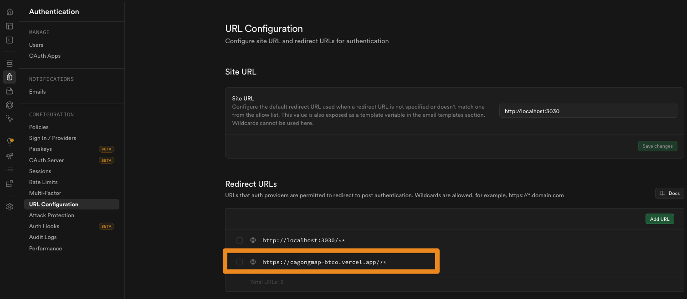
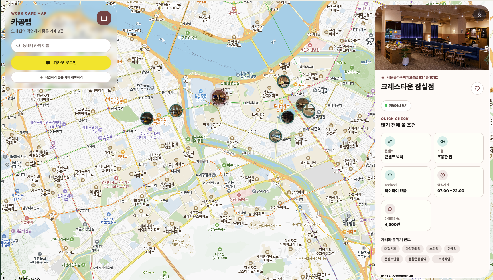

배포하기
Vercel로 느좋카페 배포하기
GitHub 저장소를 Vercel에 연결해 첫 배포를 진행합니다.
배포란 무엇인가
- 배포는 내 컴퓨터에서만 돌아가던 앱을 다른 사람이 인터넷으로 접속할 수 있는 상태로 올리는 일입니다.
- 개발 중에는
localhost에서 확인하지만, 배포 후에는 실제 주소와 서버 환경에서 확인합니다. - 그래서 배포를 볼 때는 "어떤 코드가, 어떤 검증을 거쳐, 어느 환경에 반영되는가"를 먼저 잡으면 됩니다.
배포 흐름 먼저 보기
- 예전에는 서버에 직접 접속해서 파일을 복사하고, 명령어를 치고, 프로세스를 다시 켜는 식으로 배포하기도 했습니다.
- 지금은 GitHub에 코드가 올라가면 자동으로 검증하고, 정해진 환경에 배포하는 흐름이 일반적입니다.
- 가장 기본은
main브랜치에 커밋이 올라오면, 배포 서비스가 그 코드를 빌드해서 운영 서버에 반영하는 구조입니다.
Github Actions
- GitHub Actions는 GitHub 안에서 실행하는 자동화 도구입니다.
- 테스트 실행, DB 마이그레이션 확인, 배치 스크립트 실행, 알림 보내기처럼 CI나 운영 자동화를 직접 설계할 때 씁니다.
- 보통 Github을 쓰면 Github Action을 활용해 CI/CD 과정을 자동화하게 됩니다.
CI/CD
CI/CD는 코드 변경을 자동으로 검증하고, 통과한 변경을 배포까지 이어 주는 흐름입니다.
- 위 흐름에서 코드가 들어올 때 자동으로 검사하는 단계가 CI이고, 통과한 코드를 실제 주소에 올리는 단계가 CD입니다.
배포 환경 구분하기
브랜치와 CI/CD 흐름을 잡았다면, 다음은 "어느 환경에 반영되는가"입니다. 같은 코드라도 어디에서 확인하느냐에 따라 목적이 다릅니다.
| 환경 | 의미 |
|---|---|
로컬 | 내 컴퓨터에서 개발하고 빠르게 확인하는 환경 |
프리뷰 | 브랜치나 PR마다 자동으로 만들어지는 임시 배포 환경 |
스테이징 | 운영에 올리기 전에 실제 서비스와 비슷한 조건으로 마지막 점검을 하는 환경 |
프로덕션 | 실제 사용자가 들어오는 운영 환경 |
MVP나 작은 규모 서비스는 로컬과 프로덕션만 잘 써도 충분합니다. 프리뷰와 스테이징은 팀이 커지거나 운영 리스크가 커졌을 때 따로 두는 편이 현실적입니다.
얻어갈 것
- Vercel에서 GitHub 저장소를 가져와 첫 배포를 하기까지 전체 과정을 진행합니다.
Vercel이란
- Vercel은 GitHub 저장소와 연결해 웹 앱을 자동으로 빌드하고 배포해 주는 서비스입니다.
- Next.js 프로젝트는 대부분 자동으로 감지되므로, 처음 배포할 때 설정할 것이 많지 않습니다.
- 중요한 건 "어떤 저장소를 가져오는지", "환경 변수가 빠지지 않았는지", "배포 뒤 어떤 URL에서 확인하는지"입니다.
1. 가입 후 프로젝트 만들기
- Vercel 대시보드에서
Add New를 누르고Create Project로 새 배포 프로젝트를 시작합니다. - 이미 연결된 프로젝트가 있어도, 새 GitHub 저장소를 배포할 때는 이 흐름으로 들어갑니다.

2. GitHub 연결하기
- 처음 연결할 때는 Vercel GitHub App을 설치하거나 접근 권한을 허용해야 합니다.
- 개인 계정이나 조직 계정 중 어디에 설치할지 선택합니다.
- 이 권한이 있어야 Vercel이 GitHub 저장소 목록을 보고, push나 merge를 감지할 수 있습니다.

3. 저장소 가져오기
- GitHub 연결이 끝나면 배포할 저장소를 선택하고
Import를 누릅니다. - 이 단계에서 저장소를 잘못 고르면 전혀 다른 프로젝트가 배포될 수 있으니 이름을 한 번 확인합니다.
- 수업에서는 느좋카페 프로젝트 저장소를 가져오는 흐름으로 보면 됩니다.

4. 프로젝트 설정
- Next.js 프로젝트라면
Application Preset은 보통 자동으로Next.js로 잡힙니다. - 환경 변수는 자동으로 채워지지 않으므로 직접 확인해야 합니다.

5. 환경 변수 설정
- 배포 사고는 환경 변수에서 자주 납니다. 로컬
.env.local에는 있는데 Vercel에는 없는 경우가 대표적입니다. - 브라우저에서 읽어야 하는 값은
NEXT_PUBLIC_접두사가 필요하고, 비밀키는 절대NEXT_PUBLIC_으로 노출하면 안 됩니다. - 우리 프로젝트의
.env.local에서 쓰는 환경 변수를 그대로 넣으면 됩니다.

6. 배포 확인

7. 외부 서비스에 배포 URL 등록하기
- Vercel 배포가 끝나면 외부 서비스에도 새 배포 주소를 알려줘야 합니다.
- 여기서 말하는 URL 등록은 DNS 연결이 아니라, Kakao나 Supabase가 이 URL을 믿고 요청을 받아주도록 허용 목록에 추가하는 일입니다.
- 로컬 주소만 등록되어 있으면 배포된 사이트에서 지도나 로그인이 깨질 수 있습니다.
Kakao JavaScript SDK 도메인
- Kakao 지도 SDK를 쓰는 프로젝트라면 Kakao Developers의 JavaScript SDK 도메인에 배포된 Vercel 주소를 추가합니다.
- 로컬 개발용
localhost와 배포용https://...vercel.app주소를 함께 둘 수 있습니다. - 주소 끝의
/포함 여부가 서비스마다 다르게 처리될 수 있으니, Kakao 화면에 들어간 값을 그대로 확인합니다.

Supabase Redirect URLs
- Supabase Auth를 쓰는 프로젝트라면 Authentication 설정의 Redirect URLs에도 배포 주소를 추가합니다.
- 로그인 뒤 돌아올 주소가 허용 목록에 없으면, 로컬에서는 되던 로그인이 배포 환경에서 실패할 수 있습니다.
- Preview 배포까지 받을 계획이면
/**같은 패턴을 쓸지, Production 주소만 등록할지 프로젝트 기준으로 정합니다.

8. 실제 서비스 화면 확인하기

Vercel MCP
- Vercel은 MCP나 CLI로도 다룰 수 있습니다. 배포 설정이나 환경 변수 확인 같은 작업은 도구를 쓰면 더 빠르게 처리할 수 있습니다.
- 수업에서는 먼저 웹 화면으로 흐름을 이해하고, 자동화가 필요해질 때 MCP나 CLI를 쓰는 쪽이 좋습니다.
마무리
- Vercel 첫 배포는
프로젝트 생성 -> GitHub 연결 -> 저장소 import -> 설정 확인 -> 환경 변수 입력 -> Deploy흐름입니다. - 다음 레슨에서는 배포된 사이트에 나만의 도메인을 연결하는 DNS 흐름을 봅니다.